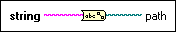

String To Path Function
Owning Palette: Path/Array/String Conversion Functions
Requires: Base Development System
Converts a string, describing a path in the standard format for the current platform, to a path.
The connector pane displays the default data types for this polymorphic function.

 Add to the block diagram Add to the block diagram |
 Find on the palette Find on the palette |